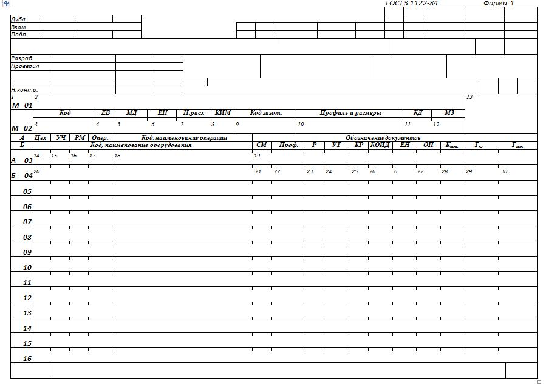
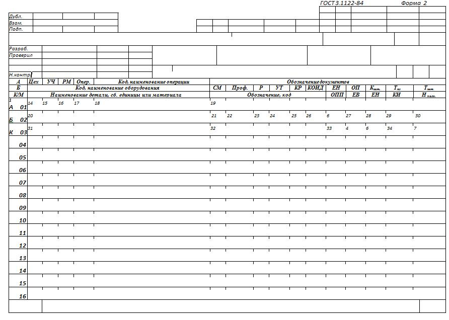
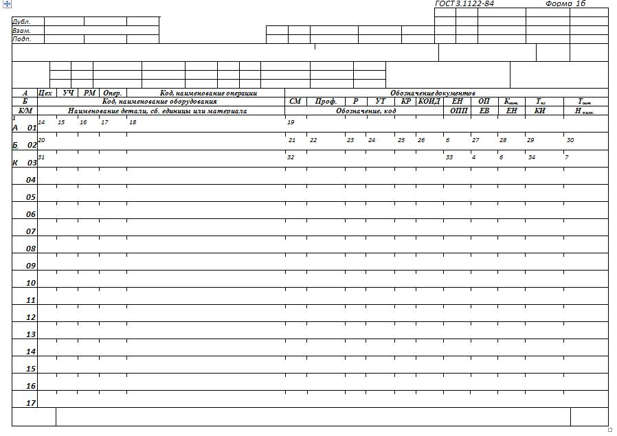

4.9 Форми й правила оформлення маршрутних карт (ГОСТ 3.1118-82)
Маршрутна
карта (МК) є складовою й невід'ємною частиною комплекту технологічних документів
(далі - документів), розроблювальних на технологічні процеси виготовлення або
ремонту виробів і їхніх складових частин.
Форми
МК є уніфікованими і їх варто застосовувати незалежно від типу й характеру
виробництва й ступені деталізації опису технологічних процесів. Для опису
технологічного процесу використовують форми 1, 2 і 1б.


Рисунок
4.14 - Форми маршрутної карти (заголовні листи)

Рисунок
4.15 - Форма маршрутної карти (наступні листи)
При
маршрутному й маршрутно-операційному описі технологічного процесу МК є одним з
основних документів, на якому описується весь процес у технологічній
послідовності виконання операцій.
При
операційному описі технологічного процесу МК виконує роль зведеного документа, у
якому вказується адресна інформація (номер цеху, дільниці, робочого місця,
операції), найменування операції, перелік документів, застосовуваних при
виконанні операції, технологічне встаткування й трудовитрати. Для викладу
технологічних процесів у МК використовують спосіб заповнення, при якому
інформацію вносять построково декількома типами рядків. Кожному типу рядка
відповідає свій службовий символ.
Службові
символи умовно виражають состав інформації, розташовуваної в графах даного типу
рядка форми документа, і призначені для обробки інформації, що виконується,
засобами механізації й автоматизації.
Проставляння службових символів є
обов'язковою й не залежить від застосовуваного методу проектування
документів.
Допускається
не проставляти службовий символ на наступних рядках, що несуть ту ж інформацію,
при описі однієї й тої ж операції, на даному листі
документа.
Для
позначення службових символів прийняті букви російського алфавіту, що
проставляються перед номером відповідного рядка й виконуються прописною буквою,
наприклад А01, М12 і т.д.
Зазначення відповідних службових символів для типів рядків, залежно від розташовуваного складу інформації, у графах МК варто виконувати згідно таблиці 4.8.
Таблиця 4.8
|
Позначення службового
символу |
Зміст інформації, яку несуть графи, розташовані на
рядку |
|
А |
Номер цеху, дільниці, робочого місця, де виконується операція,
номер операції, код і найменування операції, позначення документів,
застосовуваних при виконанні
операції |
|
Б |
Код, найменування встаткування й інформація з
трудовитрат |
|
К |
Інформація з комплектації виробу (складальної одиниці) складовими
частинами із вказівкою найменування деталей, складальних одиниць, їхніх
позначень, позначення підрозділів, звідки надходять комплектуючі складові
частини, код одиниці величини, одиниці нормування, кількості на виріб і
норми
витрати |
|
М |
Інформація про застосовуваний основний матеріал і вихідну
заготівку, інформація про застосовувані допоміжні й комплектуючі матеріали
із вказівкою найменування й коду матеріалу, позначення підрозділів, звідки
надходять матеріали, код одиниці величини, одиниці нормування, кількості
на виріб і норми
витрати |
|
О |
Зміст операції
(переходу) |
|
Т |
Інформація про застосовувану при виконанні операції технологічному
оснащенню |